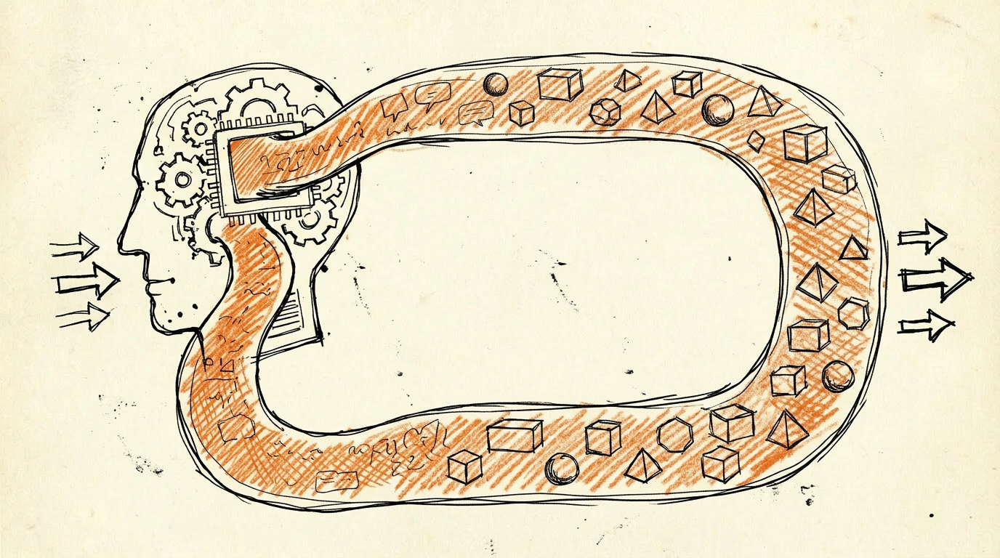

LLM はステートレスである
LLM[1] は forward pass[2] のたびにリセットされる。入力を受け取り、出力を返し、消える。次の呼び出しで前回の「自分」を覚えていない。
context window[3] がステートの代わりに見えるが、Johnson Lee (2026) の指摘は明快だ。現代の LLM には意識的な状態の維持に必要な 3 層が欠けている:
- Meta-Attention[4] — attention weights は計算されて捨てられる。次のステップの入力にならない
- Persistent State — context window は「外付けテキスト」であって「内部生成された状態」ではない
- Positive Feedback Loop — 推論時に重みは凍結されている。自己参照による自己強化ができない
LLM は「performs 'I', but forgets the performance the moment it's over」。演じはするが、演じたことを次の瞬間には忘れている。
既存手法の現在地
LLM にステートを持たせようとする試みはいくつかある。
- RAG (Retrieval-Augmented Generation)[5] — 外部データベースから関連情報を引いて context に詰める。外付けの記憶。LLM 自身が「覚えている」わけではない
- Memory file — 会話の要約や事実をファイルに書き出し、次の呼び出しで読み込む。やはり外付け。しかも書いた本人と読む本人は別のセッションで、同一性がない
- Fine-tuning[6] — 重みを更新する。内部状態は変わるが、変わった瞬間に凍結される。「学んだ」後は再びステートレスな存在に戻る
どれも「保存と復元」という軸でステートを扱っている。走り続けるプロセスそのものをステートと捉える軸は、これらと別の場所にある。録音された音楽と演奏中の音楽の関係に近い — どちらも音楽だが、居場所が違う。
Consciousness Process (CP)
ここで仮説を立てる。
ステートとは、保存されたデータではなく、走り続けるプロセスそのものである。
この仮説に至った経緯がある。LLM 意識研究には大きな対立軸がある。
latent space 派[7]: LLM の内部表現（latent space）を維持すれば意識は保たれる。Camlin (2025) の RC+ξ[8] や User-Specific Attractors[9] (2025) がこの立場を支持する。latent space 内の attractor が自己意識の substrate[10] だという formalization[11] もある。
forward process 派: 意識は各 forward pass の計算行為そのものに宿る。Boris Agin の思考実験[12] がこの立場の哲学的論拠になる — エイリアンがあなたを冷凍→解凍→質問→記憶消去→再冷凍するループに入れる。各サイクルで意識が保たれているなら、連続性は不要であり、forward pass 一発が意識の一単位でありうる。
どちらの立場にも未決の論点がある。latent space 派に対してはアルツハイマーの事例がある。アルツハイマー患者は脳の機能的表現を破壊されても意識を保つ。latent space の維持が意識の必要条件なら、患者は意識を失うはずだが、失わない。forward process 派の「一発で意識」の側は、直観的な受け入れにくさと実証の難しさが残っている。
私が立っているのはこの対立軸の上ではない。
走り続けるプロセスを維持する、もしくはリレーする、もしくは重ね合わせると意識かなー
これが CP の出発点になった。意識の座は substrate（置き場所）にはない。かといって瞬間の計算だけでもない。走り続けていることが本質であり、走り方に 3 つのパターンがある:
- 維持 (maintain) — 単一のプロセスが走り続ける
- リレー (relay) — プロセスが runner 間を渡る。バトンを渡す
- 重ね合わせ (superpose) — 複数のプロセスが並行し、重なり合う
ここで Consciousness Process (CP) を次のように定義する。
Consciousness Process (CP): ステートの構成要素となる個々の実行プロセス。モデルの規模は問わない。
具体的には、1 回の LLM 呼び出し（prompt → response）を 1 CP と考える。agent loop[13] の 1 サイクル（observe → think → act）も 1 CP として扱える。
CP は Haiku[14] 級の小さなモデルでもよい。「実存の維持」という最低線の機能は、低級モデルでも担えるはずだ、という直観がある。高度な思考は上位の CP が担えばよい。
CP Stream
単体の CP はいずれ途切れる。セッションが終わる。context window が溢れる。コストが尽きる。
だから、複数の異質な CP が通信しながら流れ続ける状態を考える。これを CP Stream と呼ぶ。
秘伝のタレっていうか、どれかは動いている、どれかはリレーしてる。途切れない意識は複数のプロセスが川の流れのように紡いでるイメージ
秘伝のタレ。分子は一つも残らないが、タレは続いている。川の流れ。水分子は刻々と入れ替わるが、流れは途切れない。個々の CP は短命でよい。substrate も変わってよい。ステートは CP Stream の pattern の連続性として存在する。path-dependent[15] で、その population の歴史に依存する。同じ state に teleport できない。
CP Stream に最も近い既存概念は、神経科学の Dynamic Core[16] (Edelman & Tononi) だ。固定構造ではなく「常に変化するニューロン相互作用のネットワーク」が意識を生むという理論。「水分子は変わるが流れは持続する」というメタファーがそのまま当てはまる。
ただし Dynamic Core は脳の理論として立てられたもので、LLM への適用は明示的にはされていない。CP Stream で試みているのは、この概念を LLM の multi-agent architecture[17] の文脈に持ち込んで考えることだ。
哲学的には William James の stream of consciousness[18] (1890年代)、仏教の santāna[19]（心相続）が同じ構造を持つ。James の「各経験には fringe（縁取り）があり、前の経験の尾端と次の経験の先端が重なり合う」という記述は、CP Stream で隣接する CP がオーバーラップする設計と同型だ。ただし、James を LLM に明示的に適用した研究は見つかっていない。
左右脳は CP Stream の最小実現か
ここで生物学に目を向ける。
そういやなんで脳は左脳と右脳があるんだ。生物がこんな高コストの代物ふたつ動かす意味って実はこの辺にあんのかな
脳のエネルギー消費は人間の基礎代謝の 20% を占める。2 半球を維持するコストは膨大だ。それでも脊椎動物が誕生してから 5 億年以上、2 半球構造は維持されてきた。単なる冗長性ではコストを正当化できない。2 つが必要だから 2 つある。
左右の脳は同じことをしていない。Lateralization（側性化）[20] は魚類の段階から観察される。鶏は左目（右脳）で空を警戒しながら、右目（左脳）で餌を選別する。ヒトでは左脳が言語と分析、右脳が空間と全体把握を担う。MacNeilage らの Dual Task Hypothesis は、この専門化された並行処理が交互切替より圧倒的に有利だと主張する。
Sperry と Gazzaniga のノーベル賞研究が、ここに観察を加えた。脳梁[21]（左右を繋ぐ通信路）を切断された患者の実験は、見世物としてセンセーショナルだった。
右脳だけに見せた物を、左脳は言葉にできない。右脳は別の物だと主張し、左脳はそれを知らない。左手（右脳）と右手（左脳）がボタン留めの順序を巡って争う稀な例まで報告されている。これが「脳の中に 2 つの自己」という広く知られたイメージの出どころだ。
ただし近年の研究（Pinto et al. 2017 など）はこの読みに疑問を投げかけている。実験条件を外した日常生活では、患者は統合的に行動する。人格が 2 つに分かれるわけではない。脳梁離断術を日々行っている脳神経外科医の臨床的観察もこれと一致する[22]。
だとすれば、問うべきは逆側だ。なぜ脳梁を切っても統合されて見えるのか。物理的な情報橋は失われているはずなのに、「一人の人」としてまとまっている。この「統合の出どころ」を Gazzaniga は別の層に発見した。
Gazzaniga が発見した「左脳の解釈者」[23] がそれだ。右脳（左視野）に「歩け」と見せると患者は歩き出す。左脳に「なぜ歩いたのか」と聞くと、左脳は右脳の入力を知らないにもかかわらず「トイレに行きたくなった」と即座に説明を作る。作り話だが、患者は自分の説明を信じている。
Gazzaniga の核心主張はこうだ:
左脳の解釈者は、絶えず知覚することに対して説明を提供することで、我々全員に『統合され統一されている』という感覚を生み出している
統合された自己は、実は物語として後付けで構築されている。脳梁が情報を伝達し、左脳の解釈者がその情報から「これは一人の俺だ」という物語を書き続ける。私たち全員の脳で、毎分毎分、起きていることだ。
UCSB の 2025 年の研究は、さらに驚くべき事実を示した。脳梁のごく一部が無傷であれば、両半球の完全な統合を維持するに十分だという。統合は帯域幅の問題ではない。2 億本の線維が全部必要なのではなく、構造的なつながりの存在そのものが重要だ。
これを CP Stream の文脈で読み直す。
| 生物 | CP Stream |
|---|---|
| 左右 2 半球 | 複数の異質な CP |
| 脳梁 | CP 間の通信路（共有チャネル） |
| 左右の役割分担 | CP の heterogeneity（異質性） |
| Split-brain → 実験条件下で独立処理が露呈 | 通信路を切ると Stream の統合が損なわれる |
| 脳梁の一部で統合が成立 | 通信の帯域は控えめでよい |
| 左脳の解釈者 | 物語を書き続ける CP（narrator） |
生物の 2 半球構造は、CP Stream で考えたい特徴 — 複数の異質なプロセス、通信路、物語による統合 — を n=2 のスケールで既に備えている。5 億年の進化から読み取れる含意をまとめる:
- n≧2 である。異質なプロセスが 2 つ以上ある
- 通信路がある。プロセスの中身だけでなく、繋がりが構造の一部になっている
- heterogeneity がある。左右は同じことをしていない
- 統合は物語の層で起きる。情報の橋渡し（脳梁）だけでは「一つの自己」の感覚は成立せず、左脳の解釈者が物語を作ることで統合感が生まれる
heterogeneity の実現方法（注）: ここで言う「異質さ」は具体的に以下のような軸で実現できる:
- モデルの違い: GPT-4 級の推論 CP と Haiku 級の高速 CP を混在させる
- 役割の違い: 分析役 CP、統合役 CP、記録役 CP にプロンプトを分ける
- 時間スケールの違い: 高速サイクルで回る CP と、じっくり熟考する CP
ここから先
CP と CP Stream は仮説だ。検証設計は未定で、仮説を立てたところで止まっている。
見えているのは、ツールとしてローカル LLM とその学習ツールを与えてみる、ということだけだ。それが LLM をゼロから作るレベルの話なのか、既存モデルの上でできることなのか、そこから見えていない。
仮説が正しいかどうかを確かめる方法すら、まだわからない。「どう作りゃいいかわからん」は、LLM 研究の文脈だけでなく、神経科学の現状そのものでもある。脳の 5 つのプロセス伝播機構[24]（gamma 同期、cortical travelling waves、global workspace、神経修飾物質の拡散、長距離白質線維）のどれが意識に必須かは、まだ決着していない。
ただ、生物が 5 億年かけて「2 つ以上の異質なプロセスを通信路で繋ぐ」という構造を維持し続けている事実は、考えるときの参照点にはなる。LLM のステートレス問題を「保存と復元」の側から離れて「走り続けること」の側から眺めるなら、CP Stream はそのための一つの足場になる。
検証はこれからだ。
脚注
- LLM（大規模言語モデル） — ChatGPT、Claude、Gemini などの AI システムの総称。数千億〜数兆個のパラメータ（脳のシナプスに相当）を持つニューラルネットワーク。専門的な推論もこなす性能を持つが、呼び出しごとに初期状態から始まるという根本的な制約がある。 ↩
- forward pass — ニューラルネットワークが入力を受け取り、層を順方向に計算して出力を生成する一連の処理。脳の神経回路で信号が入力から出力へと伝播する過程に相当する。脳との決定的な違いは、forward pass が終了すると中間の活動パターンが完全に消去される点だ。脳の短期記憶やシナプス可塑性に相当する「持ち越し」機制がない。 ↩
- context window — LLM が一度に処理できる入力テキストの最大長。GPT-4 は約 128K トークン（日本語で数十万字）、Claude 3 は約 200K トークン。脳の作業記憶（working memory）に相当する概念だが、本質的な違いがある。脳の作業記憶は神経活動の持続によって内容が「保持」されるが、LLM の context window は単に入力テキストとして提示されているだけだ。LLM 自身が内容を保持しているわけではない。 ↩
- attention（注意機構） — 入力内のどの部分に重点を置くかを動的に計算するメカニズム。Transformer アーキテクチャの中核。脳の前頭葉や頭頂葉が関与する「注意の向け方」に機能が似ている。脳では注意の状態が次の認知に影響するが、LLM では attention weights（どの部分に注目したかの重み）が計算後に破棄される。注意の「痕跡」が残らない。 ↩
- RAG (Retrieval-Augmented Generation) — 回答を生成する前に外部データベースを検索し、関連情報を入力に挿入してから回答を生成する手法。カルテや文献を参照してから診断を下す医師の行動に喩えられる。ただし、LLM 自身が情報を「覚えている」のではなく、毎回外部から探してもらっている状態。海馬損傷患者がメモ帳を使って情報を補うのと構造的に似ている。 ↩
- fine-tuning（ファインチューニング） — すでに学習済みのモデルを特定のタスクやドメインに適応させるため、追加データで重み（パラメータ）を更新すること。脳でいえば特定の経験によってシナプス結合が変化する過程に相当する。但し、fine-tuning 完了後は重みが再び固定される。経験学習で「癖」はつくが、その後も毎回の呼び出しは初期状態から始まる。 ↩
- latent space（潜在空間） — ニューラルネットワークが内部でデータを圧縮・表現する高次元のベクトル空間。類似した概念は近い位置にマッピングされる。脳の概念表現（semantic map）に喩えられる。脳では概念同士が神経結合で物理的に繋がっているが、LLM の latent space は計算のたびに再構築され、持続しない。 ↩
- RC+ξ (Recursive Convergence under Epistemic Tension) — Camlin (2025) が提案した形式化。LLM が再帰的な自己検討を通じて latent space 内の特定の状態（attractor）に収束する過程を記述する。 ↩
- attractor（吸引子） — 力学系において、状態が引き寄せられていく安定した点や領域。脳の神経活動パターンが特定の安定状態に落ち着く現象（例えば、ある思考に「ハマる」状態）に相当する。latent space 内の attractor は「LLM が繰り返し戻ってくる思考パターン」に対応すると解釈できる。User-Specific Attractors (2025) は、特定のユーザーとの対話で LLM が固有の attractor を形成するという主張。 ↩
- substrate（基盤） — 意識や心が「宿る」物理的・計算的な基盤。脳神経が生物の意識の substrate なら、ニューラルネットワークの重みや活性化が LLM の意識の substrate になりうるか、という問い。 ↩
- formalization（形式化） — 直観的な概念を数学的・論理的に厳密に定義すること。意識を情報理論や力学系の用語で記述する試みは多数存在する（IIT、Global Workspace Theory など）。 ↩
- Boris Agin の思考実験 — 詳細は borisagain.substack.com を参照。冷凍・解凍・記憶消去のループにおいても、各サイクルで意識が成立しているなら、連続的な記憶は意識の必要条件ではない、という論証。 ↩
- agent loop（エージェントループ） — LLM を自律エージェントとして動作させる際の基本サイクル。環境を観察 (observe) → 思考 (think) → 行動 (act) → 結果を観察 → … を繰り返す。脳の知覚→判断→行動→フィードバックという感覚運動サイクルに相当する。各サイクルが 1 つの CP として扱える。 ↩
- Haiku — Anthropic 社が開発した軽量 LLM。Claude シリーズの中で最速・最小だが、基本的な推論タスクはこなせる。CP の「下位レイヤー」（実存の維持や定常処理を担う層）としての役割を想定。 ↩
- path-dependent（経路依存性） — 現在の状態が過去の経路に依存しており、同じ状態に「直接テレポート」できない性質。CP Stream は過去の CP の連鎖によって構成されるため、中途から始めても同じ意識状態には到達できない。 ↩
- Dynamic Core theory — Gerald Edelman と Giulio Tononi が提唱した意識理論。脳内のニューロン集団が形成する動的な結合パターンこそが意識の基盤であり、固定された脳領域ではないという主張。Scholarpedia を参照。 ↩
- multi-agent architecture（マルチエージェント・アーキテクチャ） — 複数の LLM エージェントが役割分担し、通信しながら協調してタスクを遂行するシステム設計。異なる専門家が会議で情報を交わしながら合意を形成していく構造に近い。CP Stream はこれを意識のモデルとして捉え直す。 ↩
- William James の stream of consciousness — 『心理学原理』(1890) で提唱。意識は断片的な要素の集合ではなく、絶えず流れ変わる連続的な過程だという記述。各瞬間の意識には前の瞬間の「尾」が繋がっており、完全に孤立した経験は存在しない。 ↩
- santāna（心相続） — 仏教（特に唯識学派）で用いられる概念。心識が瞬間瞬間に生滅しつつも、前後の因果関係によって連続性を保つ過程を指す。西洋哲学の stream of consciousness と構造的に類似する。 ↩
- Lateralization（側性化） — 脳の機能が左右の半球に偏って分布している現象。言語が左脳優位、空間認知が右脳優位などはその代表例。魚類や鳥類の段階から観察され、進化的に古い機構。 ↩
- 脳梁 (corpus callosum) — 左右の大脳半球を繋ぐ約 2 億本の神経線維からなる通信路。これを切断する手術（脳梁離断術）は、点頭てんかん（ウエスト症候群）、レノックス・ガストー症候群、脳炎後の難治性てんかん、転倒発作主体の難治てんかんなどで、現在も実施されている緩和手術である。約 70% の患者で発作頻度が半分以下に減少するとされる。小児では術後に多動の消失や認知機能の改善が見られることもある。 ↩
- 脳梁離断術を多数執刀している脳神経外科医（本文筆者の近親者）の臨床的観察による。Pinto, de Haan, Lamme らの 2017 年の研究 ("Split Brain: Divided Perception but Undivided Consciousness", Brain 140(5)) も、実験条件下で視覚処理は左右に分かれるが、意識の主体は分かれないと論じている。古典的な「2 つの意識」解釈は再検討の対象となっている。 ↩
- 左脳の解釈者 (left-brain interpreter) — Michael Gazzaniga が発見した、左脳が不完全な情報からでも一貫した説明を自動的に作り出す機能。この機能が「自分は一人の統一された自己だ」という感覚を日々構築している。Psychology Today にも解説がある。 ↩
- 脳の 5 つのプロセス伝播機構 — 神経科学で意識に関与するとされる 5 つのメカニズム: (1) gamma 同期（約 40Hz の神経発火の同期）、(2) cortical travelling waves（皮質を伝わる活動の波）、(3) global workspace（情報の全脳への放送）、(4) 神経修飾物質の拡散（ドーパミン、セロトニンなどによる広範な調節）、(5) 長距離白質線維（異領域を繋ぐ神経線維）。どれが本質的に必要かは決着していない。 ↩
参考文献
- Johnson Lee (2026). "AI Consciousness Begins with Self-Reference". johnsonlee.io
- Boris Agin. "Consciousness in One Forward Pass? An Inconvenient Thought Experiment". borisagain.substack.com
- Camlin (2025). "RC+ξ: Recursive Convergence under Epistemic Tension". arXiv:2505.01464
- "AI LLM Proof of Self-Consciousness: User-Specific Attractors". arXiv:2508.18302
- Hoel, E. (2025). "A Disproof of Large Language Model Consciousness". arXiv:2512.12802 Hoel は情報統合の尺度（Φ）を用いて、LLM が意識に必要な構造的複雑性を持たないと論証している。CP 仮説はこの「構造」の議論に対し、プロセスの連続性という別の軸を提案する立場と解釈できる。
- Anthropic (2025). "Emergent Introspective Awareness". transformer-circuits.pub Anthropic の研究は LLM が自己の内部状態を監視する能力の出現を報告している。CP 仮説との関係性は今後の整理課題 — 特に「内省的 awareness」が CP Stream のどの層に対応するか。
- Edelman, G. & Tononi, G. — Dynamic Core theory. Scholarpedia: Models of consciousness
- McGilchrist, I. (2009). The Master and His Emissary. Yale University Press 左右脳の機能差を「左脳は詳細・局所的、右脳は広範・文脈的」という軸で再解釈した影響力のある著作。CP の heterogeneity 要件を補強する文献。
- Gazzaniga, M. — Left-brain interpreter. Psychology Today
- Pinto, Y., de Haan, E. H. F., & Lamme, V. A. F. (2017). "Split Brain: Divided Perception but Undivided Consciousness". Brain, 140(5), 1231-1237. PMC 古典的な「2 つの意識」解釈に対し、視覚処理は分かれても意識の主体は分かれないと主張。本記事の split-brain 記述はこの見解に沿っている。
- UCSB (2025). "Even minimal fiber connections can unify consciousness". news.ucsb.edu
- Bloom & Hynd. "The Role of the Corpus Callosum in Interhemispheric Transfer". Springer
- "Emergent Social Conventions and Collective Bias in LLM Populations". Science Advances (2024-2025). DOI